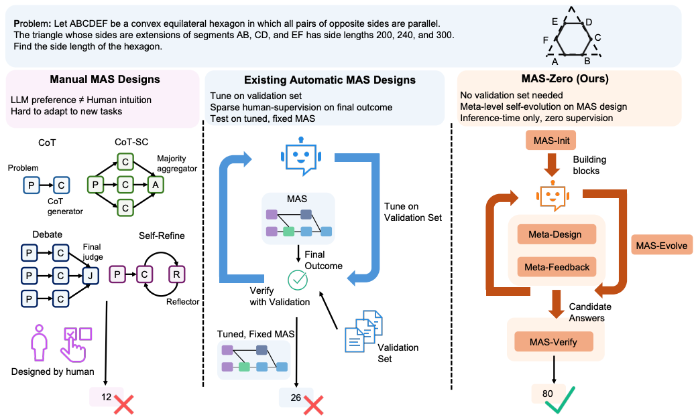

Abstract
Multi-agent systems (MAS) leveraging Large Language Models hold enormous promise, yet most current designs rely on manually specified roles and protocols that fail to align with LLM strengths or adapt to new tasks. Automatic approaches reduce this burden but usually require validation sets, stay static at inference, and cannot gracefully collapse into simpler solutions. We introduce MAS-Zero, the first self-evolved, inference-time framework for automatic MAS design. MAS-Zero iteratively designs, critiques, and refines MAS configurations tailored to each instance, using meta-feedback on solvability, completeness, and when beneficial, reduction to simpler systems. Experiments across reasoning (math, graduate-level QA), coding, and agentic (search-based) benchmarks with both open- and closed-source LLM backbones show that MAS-Zero surpasses strong manual and automatic baselines, delivering accuracy gains up to 16.69% on reasoning, 16.66% on coding, and 5.45% on agentic tasks while staying cost-efficient.
Key Contributions
Inference-Time-Only Framework
MAS-Zero is the first automatic MAS system that runs entirely at inference time—no precomputed validation set or outcome supervision—while still inventing bespoke agent hierarchies per instance.
State-of-the-Art Automatic MAS
The meta-design + verification loop delivers substantial accuracy gains over strong manual and automatic baselines across reasoning, coding, and agentic tasks while remaining cost efficient.
Comprehensive Evaluation & Insights
Benchmarks spanning multiple domains, difficulty levels, and both open- and closed-source LLM backbones surface key insights about meta-iterations, verifier strength, and structure selection.
Contrast with Existing Work

Key Takeaways
1. MAS-Zero is effective Across Domains & Agents
MAS-Zero consistently improves reasoning, coding, and agentic benchmarks while adapting to both open- and closed-source LLMs, indicating robustness across domains and backbone choices.
2. When to use MAS is important
Surprisingly strong single-agent (CoT, CoT-SC) and lightweight manual MAS (Debate, Self-Refine) highlight that MAS-Verify is the critical stage—an oracle verifier unlocks the largest performance jump.
3. Sub-Agent Capability Is the Bottleneck
Better meta-agents yield gains, but sub-agent strength ultimately caps improvements; enhancing solver tools and base models is key to further progress.
The evidence for these sits with the figures that produced it, on the Results tab.
BibTeX
@misc{ke2025maszero,
title={MAS-Zero: Designing Multi-Agent Systems with Zero Supervision},
author={Zixuan Ke and Austin Xu and Yifei Ming and Xuan-Phi Nguyen and Caiming Xiong and Shafiq Joty},
year={2025},
eprint={2505.14996},
archivePrefix={arXiv},
primaryClass={cs.CL},
url={https://arxiv.org/abs/2505.14996},
}